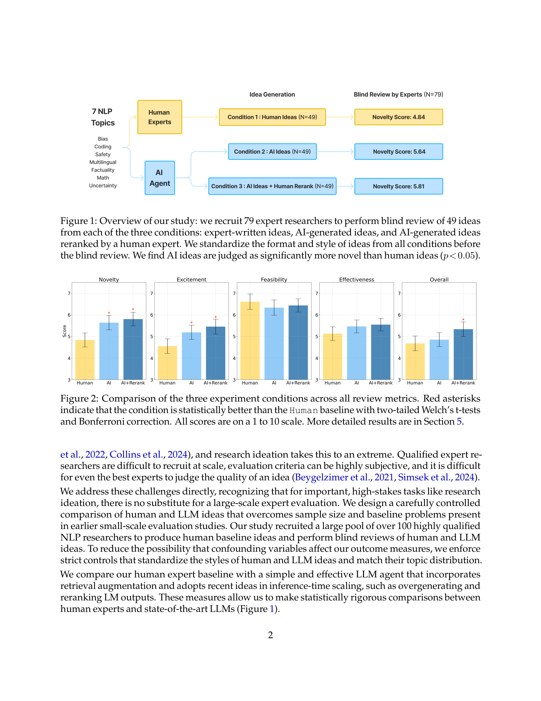
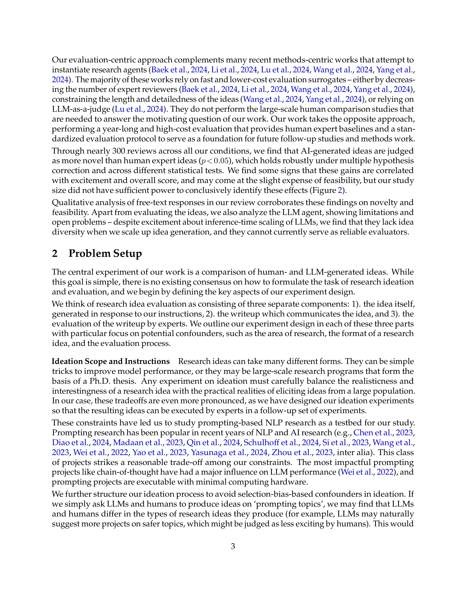
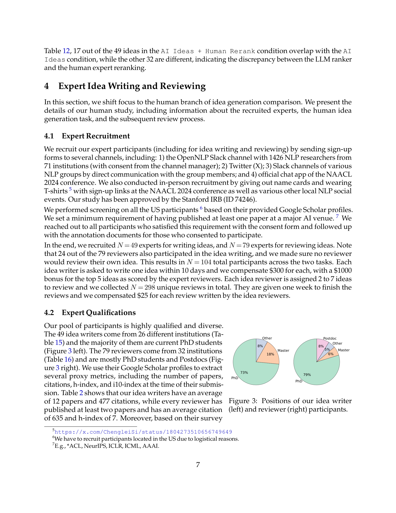
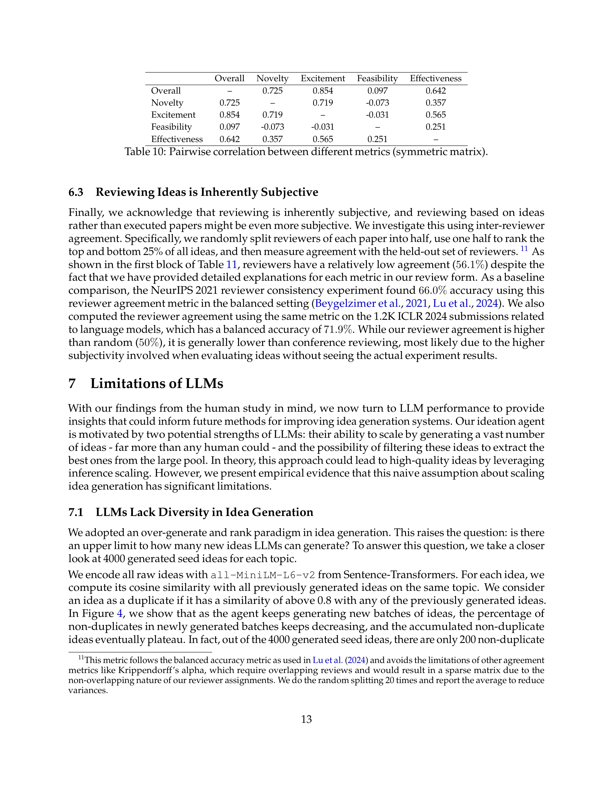

Figure 1
100명 이상의 NLP 연구자를 모집하여 LLM 기반 아이디어 생성 에이전트와 인간 전문가의 연구 아이디어를 최초로 대규모 블라인드 비교한 연구. 7개 NLP 주제에 걸쳐 3가지 조건(인간 아이디어 49개, AI 아이디어 49개, AI+인간 재랭킹 아이디어 49개)을 79명의 전문 리뷰어가 블라인드 평가한 결과, AI가 생성한 아이디어가 인간 전문가 아이디어보다 통계적으로 유의하게 더 참신하다(p<0.05)는 결론을 도출했으나, 실현가능성에서는 다소 약한 것으로 나타났다.

Figure 2
LLM의 과학적 발견 가능성에 대한 낙관론이 커지고 있으나, LLM이 전문가 수준의 참신한 연구 아이디어를 생성할 수 있는지에 대한 엄밀한 실증 평가가 부재했다. 기존 연구들은 소규모 전문가 평가, 아이디어의 상세도 제한, 또는 LLM-as-a-judge에 의존하는 등 대리 지표에 의존해 이 근본적 질문에 답하지 못했다. 1년에 걸친 고비용 대규모 전문가 평가가 필요했다.

Figure 3

Figure 4
LLM의 연구 아이디어 생성 능력에 대한 최초의 대규모 엄밀한 실증 연구로, 방법론적 투명성과 통계적 엄밀성이 뛰어나다. 3가지 독립적 통계 검정과 linear mixed-effects model을 통해 "AI 아이디어가 더 참신하다"는 결론을 강건하게 뒷받침하며, 동시에 실현가능성 약점, 다양성 부족, 자기평가 실패 등 LLM의 한계를 정직하게 보고한다. 다만 NLP 프롬프팅이라는 좁은 범위, 인간 베이스라인이 최고 수준이 아닐 수 있다는 점, 리뷰어의 참신성 편향 가능성은 결론의 일반화에 주의를 요한다. "참신하게 들리는 아이디어"와 "실제로 성공하는 연구"의 간극을 메우는 후속 실행 연구가 이 논문의 발견을 완성할 핵심 과제이다.